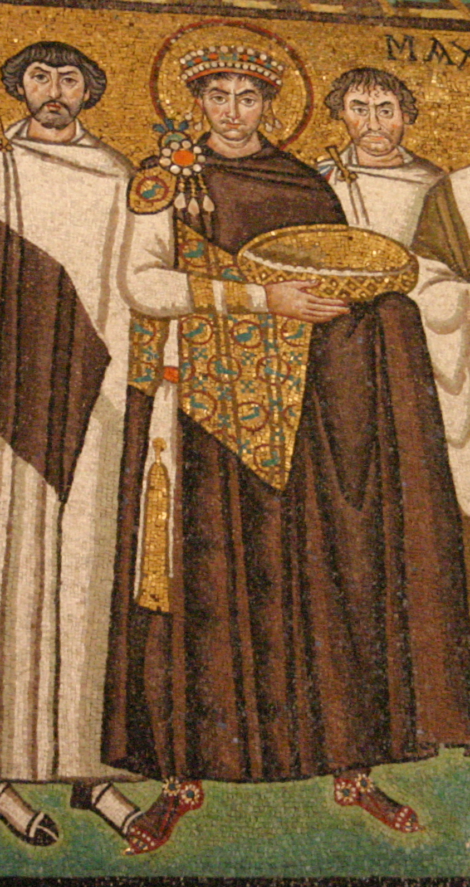
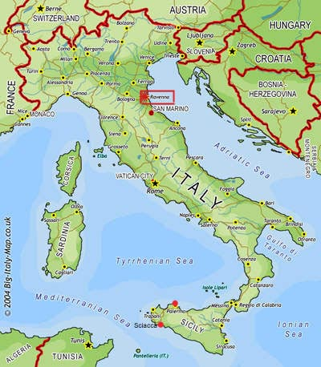
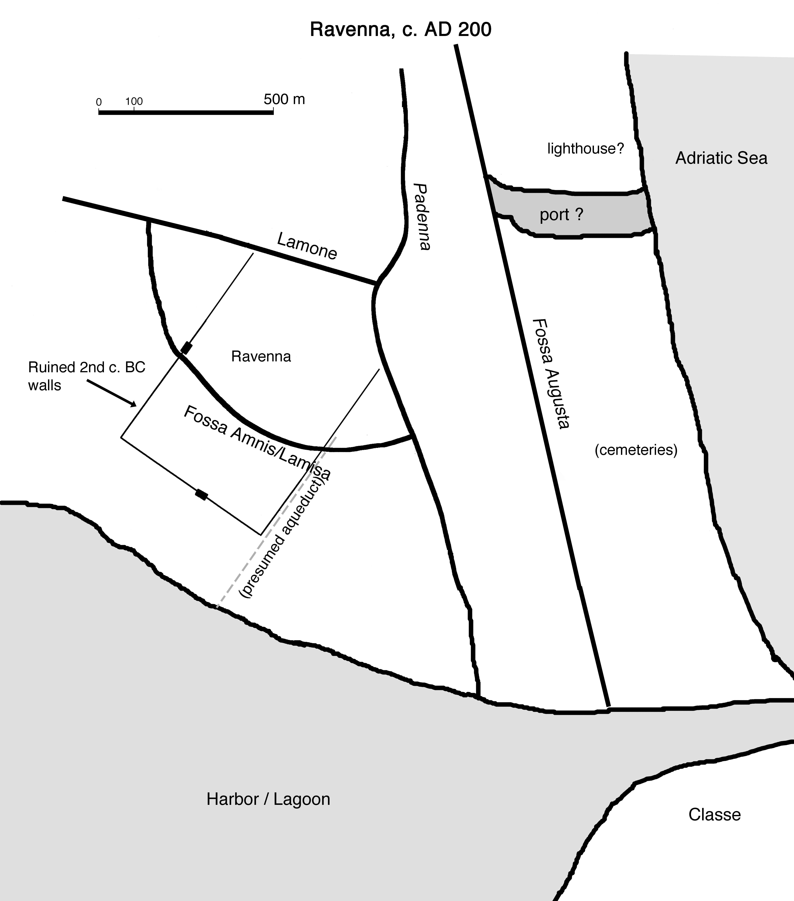

|
 |
Ravenna, 400-550 |
[note: material on these pages is taken from Dr. Deliyannis' book Ravenna in Late Antiquity, published by Cambridge University Press in 2010. Many of the illustrations are under copyright, and may not be copied and used elsewhere without written permission].
|
The city of Ravenna in northeastern Italy contains some of the most spectacular works of art and architecture to have survived from late antiquity. These monuments were set up between 400 and 600 AD, at a time when Ravenna was one of the most important cities in the Mediterranean world. After 600 Ravenna experienced both economic and political downturns, but the artistic and architectural monuments remained as a testament to the splendor of the Christian Roman empire in its early centuries, an inspiration both to later generations of the city's inhabitants and to visitors. |
 |
|
Today Ravenna lies 9 km inland
from the sea, but in the Roman and Late Antique periods it was located
directly on the Adriatic coast, at the southern edge of the delta of
the River Po and surrounded by swamps and marshes. The network of
canals and rivers connected it to the major cities of northern Italy; a
large natural harbor to the south of the city was the home port, after
the 1st century BC, of one of the Roman empire's two fleets. [note:bold
lines on the map represent rivers and canals] Founded as early as the 2nd
century BC, during the 1st-3rd centuries AD, at the height of the Roman
empire, the city of Ravenna was a relatively small and undistinguished
provincial capital. Although the port and its surroundings (known
as Classe) continued to exist and even to flourish, the city seems to
have been largely abandoned by the year 300, after destruction of some
buildings by fire that might indicate that it was destroyed during
barbarian invasions of the 270's. We know almost nothing about
the city from 300 to 400 AD; however, shortly after 400, its fate was
to change dramatically. |
 |
The following links will take
you to more
information about Ravenna in Late Antiquity:
The
Ostrogothic Kingdom (489-540)
The
Byzantine exarchate (540-751)
Note:
The following website has amazing virtual views of some of Ravenna's buildings:
http://projects.mcah.columbia.edu/ha/html/byzantine.html; scroll to the right until you get to Ravenna.
See also: https://www.turismo.ra.it/en/follow-your-way/unesco-monuments-ravenna/, this is Ravenna's tourism website, where you can also find lots of other information
Finally, there are some great digital reconstructions of Ravenna and Classe from the 1st to the 6th centuries, here (the website is in Italian):
https://design.tre.digital/index.php/progetti/beni-culturali/29-ricostruzione-in-3d-ravenna-antica